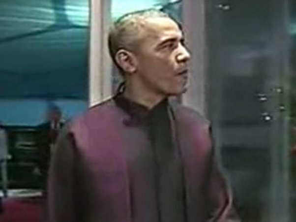

2014-11-12 22:49:00
亜太經濟合作組織（APEC，Asia-Pacific Economic Cooperation）原本是1989年，美國為了牽制當時如日中天的日本經濟而設立的；日本的金融泡沫破掉之後，APEC的重要性大幅降低，成為又一個一年一度的打屁論壇。早先美國自二戰後一直追尋全球貿易自由化，這是因為貿易自由化雖然是雙赢的好事，卻仍對經濟霸主最為有利；但是過去十幾年來，中共的經濟實力突飛猛進，對美國霸權的威脅日益明顯。一旦中共的經濟（2014年）和貿易（2013年）規模超越美國，推動自由化就變成為人作嫁，美國當然也就失去了對全球貿易自由化的熱情，以致世界貿易組織（WTO，World Trade Organizaiton）自1995年成立到現在19年，竟連一項新協議都没有辦法產生。美國的新經濟戰略是想辦法簽訂不包含中共的雙邊或多邊貿易協定，也就是搞自己的小圈圈，繼續當土霸王；因此向東推行跨大西洋自由貿易協定（TTIP，Trans-Atlantic Trade and Investment Partnership），向西則搞跨太平洋合作協定（TPP，Trans-Pacific Partnership）。因為APEC包含了中共和俄國，當然也就從無關緊要的鶏肋又逐漸轉變成一個潜在的威脅，所以歐巴馬連續幾年没有出席。
今年的APEC剛好輪到中共做莊。習近平本來就不是胡錦濤那種躺着幹的領袖，經過两年來對内部紀律的整肅，已經有了對外主動出撃的本銭。而美國對中共在外交和貿易上的打壓越來越緊迫，中共若坐視不管，將有被緩慢窒息而死的危険。因此習近平提出的大政略反撃方案，是所謂的“一帶一路”，“一帶”是指經中亜到歐洲的陸路帶，“一路”則是經麻六甲海峽過印度洋進地中海的海路。其基本構想是整合歐亜大陸，來對抗美國分而治之的企圖；也就是寜可和鄰居們分享利益，也勝過讓美國人壓榨。APEC只包含太平洋岸的海路國家，所以不是發揮整體政略戰略的平台。習近平的目標是利用天時（全球經濟正陷入低潮，大家在經貿上都有求於中共）、地利（地主國有權安排議程）和人和（除美國和台灣外，没人想在經貿問題上得罪中共），進行一場戰役反撃，累積戰術上的小勝成為戰役上的大勝，所以他左右開弓，主動在多方面推展以中共為中心的貿易自由化倡議，幾天下來的收獲相當可觀。
俄國在烏克蘭事件後，已經全面倒向中共（詳見前文《從烏克蘭看今日美俄的政略與戦略》），幾個月前就簽了一張400億美元的合約，把東西伯利亜的天然氣賣斷給中共；這次普丁又簽了新合同，把西西伯利亜的天然氣也賣斷了。中共有了陸路的天然氣，海運的天然氣供應商如澳洲就緊張了，於是澳洲首相和他的經濟部長在北京積極對中澳自由貿易協定進行談判，務求在一個月内簽定。習近平正開始追查逃亡海外的貪官，澳洲也第一個響應，簽下APEC的新反腐合作協定的早幾天前就先遣返了一批。加拿大也是依賴中共很深的原材料出口國，原本首相在两個禮拜前的恐襲後取消了參與APEC會議的計劃，結果事到臨頭，還是抽空趕到，生怕好生意都被俄澳搶光了。中共的貪官外逃，主要是到美加澳三國；既然澳洲和加拿大都積極回響，歐巴馬也就找不到藉口反對，於是新反腐合作協定就順利通過。
真正在APEC會議期間簽下自由貿易協定的是韓國。韓國和澳洲剛好是上個月受美國限制而不敢加入亜洲投資銀行的两個亜洲國家，現在看他們争先恐後跟中共簽自貿協定的様子，只怕美國還能束縛他們外交政策的日子也不長了。台灣人集體腦殘搞反服貿，本來就必然會有報應。人類社會是為經濟發展而形成的：一個族群可以學習經濟規律，搞好内部組織，執行明智的政策，那就有好日子過；如果一意孤行，忽視經濟規律，那麼那隻看不見的手（Invisible Hand，原出於Adam Smith的《國富論》，《The Wealth of Nations》）自然會狠狠打你的屁股。現在藤條已經高高舉起，台灣人仍舊自我感覺良好，真是天作孽，尤可違，自作孽，不可活。
和日本的暫時和解則是統戰的“聯合次要敵人以打撃主要敵人”的零活運用。美國對中共目前最大的威脅是TPP，而TPP談判近來最大的問題是日本不願開放農產品市場。中共當然没有理由把日本逼到墙角去，否則狗急跳墙，反而讓美國人渔翁得利。因此中共在整個APEC會議中最大的收獲，就是得到了除美國外所有國家的支持，批准了APEC自由貿易區的準備活動。像智利這様的小國，要它在不含中共的TPP和包含中共的APEC自貿區選擇的話，當然是要後者，而中共就在三天前成功地提出了這個選項。從日本和越南（另一個對TPP有意見的參與國）的角度看，既然有了APEC自貿區這塊大餅，自然就没有理由在TPP上委屈求全，讓美國人占盡便宜。所以美國即使還是把TPP搞起來了，利潤只怕没有原先設計的多，參與國也仍會積極把TPP擴大到APEC的範圍，最終還是為中共的自由貿易掃除障礙。
習近平的主動性並不止於這些外交和經濟上的成就，他居然和歐巴馬異中求同，不但互相許諾長期多次簽證，還簽下了軍事行動通報機制和公海行為準則。其細節目前還不清楚，不過有可能代表着美軍將不再經常性地貼近中共領海和艦隊進行偵察；這將避免擦槍走火的危険。至於限制二氧化碳排放的《中美氣候變化聯合聲明》，更是歷史性的文件；習近平不但對處理全球氣候變化一舉做出了至今最重要的實質貢獻，也以具體行動表明了誰才是世界的領導大國。而美國的大眾媒體在過去两年來，一直喜歡拿中國的二氧化碳排放量已經超過了美國一事來嘮嘮不休，完全假裝不知道美國的人均排放量仍然是中國的三倍，或者過去150年排放到大氣層的二氧化碳主要來自美國。有了《中美氣候變化聯合聲明》，或許他們必須另找其他的謊言來印了。

歐巴馬一面嚼着口香糖一面走進晚宴。